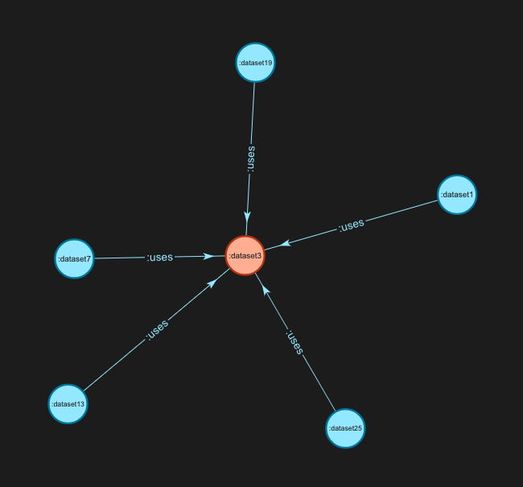

Understanding and visualisation
Examples of how we can query and understand the data, using the same dummy dataset.
Accessing data
We did not have the opportunity to create a functional prototype for how users would view and/or query the data.
However we did look at what the basic structure of the site could be, See sitemap below.
Much like the editor the suggested approach would be to develop foundations which can be iterated on and developed over time.
It would be hugely beneficial in the next phase to conduct user testing with the intended real users of the system to get a fuller understanding of their needs and processes and where this can support them.
Viewing and querying data
The planned approach would be to develop some standard queries to answer common questions. In the sitemap above these would be made available to users via the 'View existing queries' option. We could also offer more expert users the ability to add to this list of queries or generate one off queries by making use of an API.
Some examples of the types of questions we would look to make available:
- Is there any personal information (PI)?
- Is there any personally identifiable information (PII)?
- Is there any 3rd party IP?
- Is there a risk of containing PI, PII or IP from dependencies?
- Where is my data used?
- Who is using my data
- Do I have dependencies on data owned by other business areas?
A more in depth look at how we would build these queries for two examples (using our example dataset) are below:
Example 1: Understanding connections
Question: What datasets use another dataset and what are they?
SELECT * WHERE { ?s :usedBy ?o . }

Example 2: Understanding the data
Question: What datasets contain Personal information or have it in their dependencies?
The following example shows how the query can be built up to answer the question.
Step 1: Datasets that contain personal info
SELECT ?dataset
WHERE
{
?dataset ?p :dataset .
?dataset :pii :y .
}
Step 2: Datasets that use datasets that contain personal info
SELECT ?dataset
WHERE
{
?dataset ?p :dataset .
?dataset :uses ?uses.
?uses :pii :y .
}
Step 3: Combination of both queries
SELECT ?dataset ?uses
WHERE
{
{?dataset ?p :dataset .
?dataset :uses ?uses.
?uses :pii :y .}
UNION {
?dataset :pii :y .
}
}